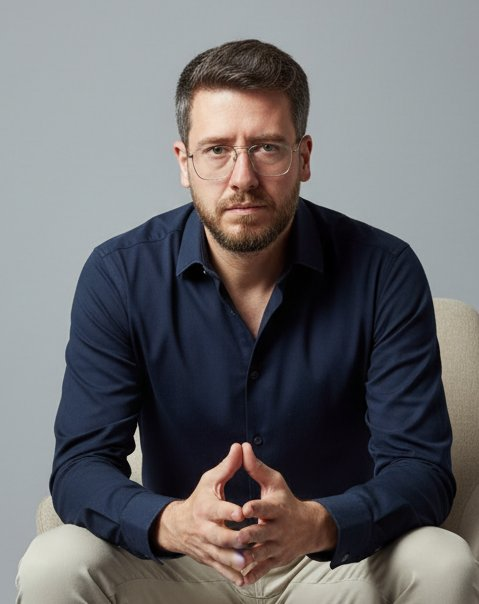

Diagnóstico Express
Sob orçamento
Para olhar um processo e sair com prioridades claras.
- Um processo
- Remoto
- 3 a 4 horas de conversa
- Relatório com até 3 prioridades
- Entrega em até 5 dias úteis após o alinhamento
Physis, a evolução natural do negócio.
Diagnóstico Kaizen
Um mapa claro de como o trabalho roda hoje e uma lista do que corrigir primeiro. Orçamento sob medida para o porte da sua empresa.

A simplicidade é a sofisticação máxima.
Sintomas
No método Kaizen da Physis, esses são desperdícios de serviço: sinais de que o processo gasta tempo e esforço sem entregar valor.
O mesmo serviço é feito de novo porque algo saiu errado na primeira vez. O tempo se perde corrigindo o que já deveria ter saído certo.
Pedidos, exames ou documentos ficam parados entre uma etapa e outra. O trabalho não anda, e o prazo combinado escorre.
Cada pessoa executa o trabalho de um jeito. O resultado depende de quem está no turno, e o padrão não se sustenta.
A mesma informação ou a mesma tarefa aparece em dois lugares, duas planilhas ou duas áreas. O time trabalha duas vezes e ainda assim diverge.
O processo vive na cabeça de poucas pessoas. O restante da equipe não enxerga como o trabalho roda, nem onde ele trava.
Etapas demais, informação demais, exceções demais. Ninguém consegue ver o essencial, e o processo fica difícil de ensinar e de melhorar.
Como funciona
Kaizen, no método da Physis, é melhorar o processo com quem executa o trabalho. O diagnóstico percorre as cinco fases: coletar o "As Is" no Genba, identificar erros e desperdícios, chegar à causa raiz, propor soluções e idealizar o processo futuro, o "To Be". A prioridade segue a equação de valor da Physis:
Uma conversa para escolher o processo, o objetivo e o recorte do trabalho.
Ir até onde o trabalho acontece, conversar com quem executa e registrar o processo como ele roda hoje, em fluxograma. Remoto ou presencial em São Paulo.
Identificar espera, retrabalho, duplicidade, falta de padrão e os demais desperdícios. Em seguida, chegar à causa raiz, com ferramentas como os 5 porquês.
Propor soluções, ranquear as ações pela equação de valor e indicar o que eliminar, agrupar ou paralelizar. Relatório escrito e reunião de apresentação em até 7 dias úteis após o mapeamento.
Uma conversa para ver o que saiu do papel e o que travou. Na faixa Kaizen.
O que você recebe
O trabalho como ele roda de fato, com as etapas, as esperas e os desperdícios visíveis em uma página.
Quick wins ordenados pela equação de valor, para você saber o que fazer primeiro.
Documento que fica com você e pode ser mostrado à diretoria e ao time.
Conversa para explicar o relatório, tirar dúvidas e ajustar prioridades com você.
Quinze dias depois da entrega, para ver o que andou e destravar o que ficou parado.
O que não entra no diagnóstico: a implantação das ações. A capacitação da equipe é o Workshop Kaizen in company, orçado à parte.
Formatos
Três formas de começar: um diagnóstico rápido, um mapeamento mais fundo ou um treinamento da equipe no método. O valor é definido de acordo com o porte da empresa e o escopo combinado.
Sob orçamento
Para olhar um processo e sair com prioridades claras.
Sob orçamento
Para mapear com profundidade e sair com um plano.
Sob orçamento
Para treinar a equipe no método, no próprio ritmo da empresa.
Pagamento via Pix: 50% no agendamento e 50% na entrega (relatório ou realização do workshop).
Nota fiscal emitida pela Physis.
No diagnóstico, início em até 3 dias úteis após o sinal.
Depois do diagnóstico
Automatizar um processo confuso só faz a confusão andar mais rápido. Por isso a Physis primeiro mapeia e simplifica. Com o processo claro, fica fácil ver onde a inteligência artificial economiza tempo de verdade.
O mapa do processo aponta as tarefas repetitivas que podem ser automatizadas, como triagem, cadastro, relatórios e respostas padrão.
Treinamento prático para o time implantar e manter as automações com as ferramentas que já usa.
Se preferir, a Physis implanta junto com você e acompanha os primeiros resultados.
Projeto orçado sob medida, a partir do que o diagnóstico mostrar.
Sobre o Daniel
Daniel Reis de Aguiar, fundador da Physis. A Physis ajuda empresas a reduzir desperdício e organizar processos e equipes, com melhoria contínua simples de aplicar.
2010 a 2021
Gestão do programa Lean Six Sigma, com cerca de R$ 18 milhões em resultados e formação de mais de 40 profissionais certificados, com triagem, tutoria e banca dos projetos.
jul/2022 a dez/2024
Como consultor sênior de melhoria contínua, mentoria de cerca de 30 projetos Lean Six Sigma, entre eles banco de sangue, laboratório e UTI, inclusive na Fundación Cardiovascular de Colombia e na Fundación Valle del Lili. Formação de lideranças internas no método. Ganhos de capacidade operacional, com redução de horas extras e readequação de escalas e de quadro.
A Physis está começando e ainda não tem cliente publicado. O método vem dessa prática em operações reais.
Perguntas frequentes
Sim, depois do diagnóstico. Primeiro o processo é simplificado, depois a Physis indica onde a IA traz ganho e pode treinar sua equipe ou implantar junto. O valor é orçado a partir do diagnóstico.
Não. O mapeamento acontece conversando com quem executa o trabalho, e o recorte é combinado antes, no alinhamento, para caber na rotina do time.
Sim. O Express é sempre remoto. O Diagnóstico Kaizen pode ser remoto ou presencial em São Paulo. O Workshop Kaizen in company é presencial em São Paulo ou online.
O escopo é fechado antes de começar e o relatório é revisado com você na apresentação.
Sim. A nota fiscal é emitida pela Physis.
Você fica com o mapa, a lista priorizada e o relatório, e a chamada de acompanhamento acontece 15 dias depois da entrega. Se fizer sentido capacitar a equipe, o caminho é o Workshop Kaizen in company. A implantação das ações, se for o caso, é orçada à parte.
No diagnóstico, o tempo se concentra nas conversas sobre o processo: o alinhamento de 30 a 45 minutos, as conversas do mapeamento com quem executa o trabalho (3 a 4 horas no Express, de 1 a 2 dias no Kaizen) e a reunião de apresentação. No Workshop, a equipe participa de 4 a 8 horas de treinamento.
É um treinamento da equipe no método Kaizen da Physis, de 4 a 8 horas, presencial em São Paulo ou online. O kit de templates Physis está incluso. Não é certificação Belt e não inclui a implantação das ações do processo.
Conte em poucas linhas qual processo incomoda. Daniel responde pelo WhatsApp e explica como funciona.